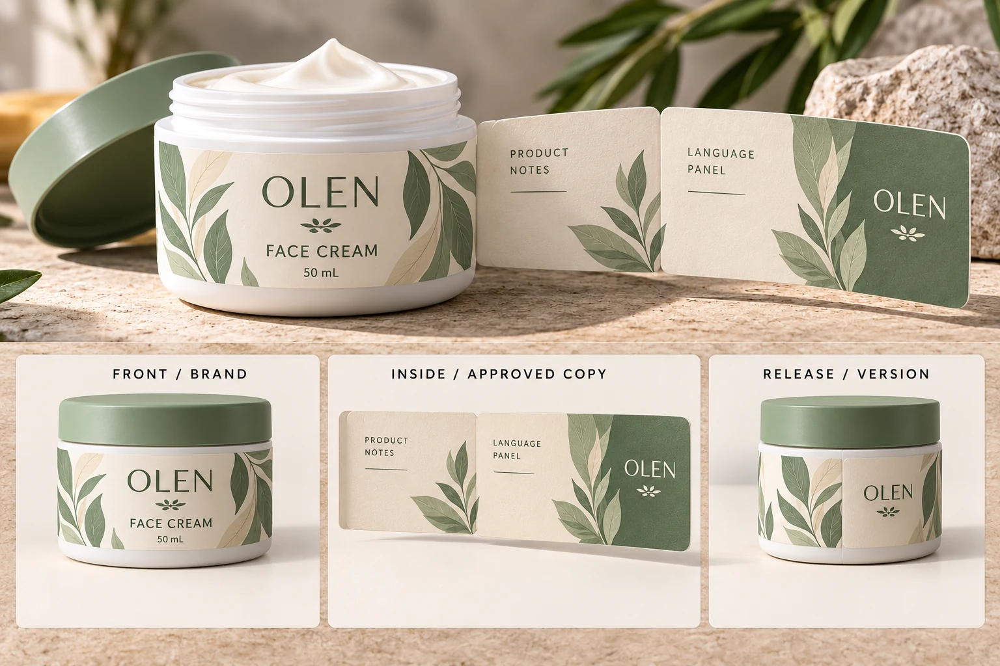

Establish whether the copy really needs another surface
Start with the brand-approved content, not the longest working document. Separate final copy from internal notes and unresolved edits. Ask the responsible reviewers which information belongs on the physical package and which placement constraints they need the designer to follow.
Then review a conventional layout at actual size. A clearer hierarchy, a separate back label or an existing carton may solve the problem without an opening structure. Do not shrink everything until the PDF looks tidy and call the space problem solved.
The skincare label system guide helps coordinate a range across jars and bottles. Here the decision is more specific: whether additional attached surfaces provide a usable home for the approved content.
Name the proposed expanded-content construction
CCL's beauty and personal-care overview describes expanded-content labels that combine pressure-sensitive labels with additional layers or folded information. Its examples include multi-ply and folded-leaflet constructions. That establishes available technology families, not a single interchangeable product.
Ask a potential production supplier to identify the actual proposal. How does it open? Which surfaces print? Does the intended version reclose? Where is the permanent attachment? What container shapes and delivery arrangements need evaluation?
A brochure example is not proof that a particular construction works on your small cosmetic jar. Confirm availability and project requirements before treating it as an option in a quotation. This guide does not assert that YT Labels manufactures every expanded-content format described by another supplier.
Draw the panel map before polishing the artwork
Give each surface a stable name: visible front, inner panel, reverse of flap or another name matching the supplier's drawing. Avoid calling several different surfaces the back.
Assign each approved copy block to one identified surface. Record the language and version beside it. Where information must stay visible or accessible, have the brand's responsible reviewers confirm the arrangement. An attractive opening mockup does not approve information placement for a sales market.
Use a panel map such as this:
| Content block | Proposed surface | Review needed |
|---|---|---|
| Brand and product identity | Identified visible face | Recognizable on the closed, applied pack |
| Approved instructions | Named panel or conventional pack area | Placement accepted by responsible brand reviewer |
| Language versions | Specific panels, with version IDs | Correct mapping and reading order |
| Opening instruction | Identified access point | Discoverable without guessing |
| Variable information | Agreed visible location if required by the project | Compatible with later coding and use |
| Revision reference | Controlled artwork record | All panels belong to the same approved release |
The table is an editorial planning aid. It contains no approved text, mandatory placement rule or default panel count. Use the production drawing and the actual copy to complete it.
Check access on the applied container
A flat sample can show a structure that becomes awkward around a curved jar. Ask for an appropriate mockup or sample on the intended container, following the production party's recommendation.
Review where the reader finds the opening point, which way the flap moves and whether the necessary information can be viewed without losing the product identity. Check whether the structure interferes with the lid, base, a seam or adjacent packaging. If repeated opening is part of the brief, agree how that function will be evaluated rather than assuming a pictured flap proves it.
Record what the sample actually demonstrates. A paper model can clarify reading order and reach. It cannot establish adhesive retention, resistance to product contact or repeated reclosure performance. Those questions need relevant construction-specific evidence.

Make the application discussion specific to the structure
If the label will be machine-applied, involve the receiving operator before the construction is finalized. A multi-layer proposal can have different physical handling requirements from the single-ply label the line used previously. Obtain the actual supplier and operator requirements rather than calculating compatibility from a product photo.
For the wider delivery specification, use our co-packer roll handoff guide. Keep its confirmed roll requirements attached to the expanded-content proposal. They should refer to the same construction and artwork, not a standard roll from another job.
Also ask how samples, preparation, version changes and final supplied format appear in the quotation. Extra information space does not by itself establish lower packaging cost or shorter production time.
Compare two real ways of solving the space problem
Consider a hypothetical jar whose approved information already fits legibly across its conventional label and established carton. Keeping that arrangement can be sensible. An opening label might add a production and access task without solving an actual decision blocker.
Now consider a small pack with a confirmed need for additional attached information and a supplier-supported construction. A panel map and applied sample can help determine whether expanded content meets that need. The reason to investigate it is the required information journey, not the novelty of a peel-back feature.
If the jar changes or a language is added, revisit the affected panel map and sample scope. Do not approve the front artwork while leaving the inner panels attached to an older copy revision.
Send the information problem with the packaging brief
For a cosmetic label inquiry, provide container details, usable label area, approved copy blocks, language/version count, quantity by design and intended application method. Identify whether a conventional layout remains possible and ask which constructions are currently available for review.
Use the inquiry form to prepare the message. Send the panel map and artwork through email or WhatsApp; the form does not upload attachments. The next useful step is an identified proposal that both the copy approver and the receiving production team can assess.